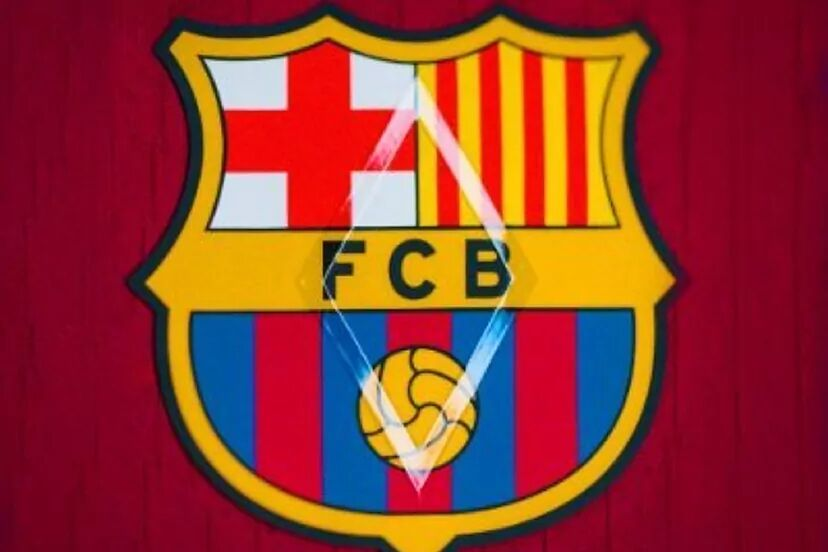
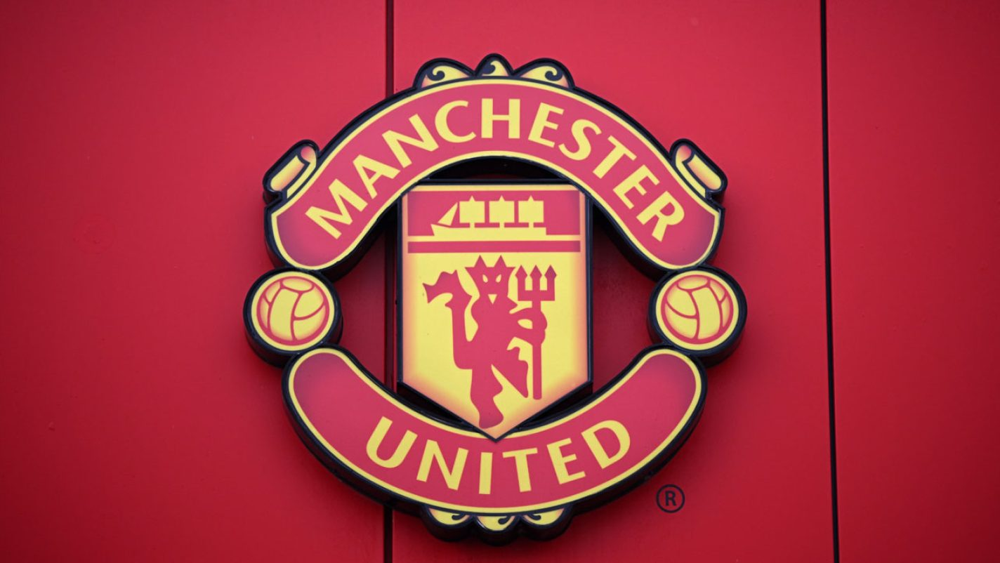
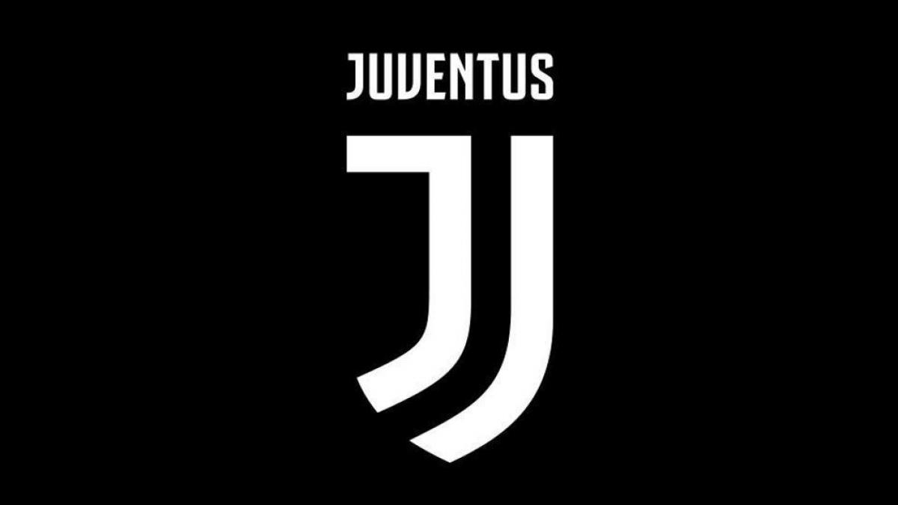
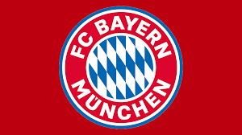

Real Madrid Club de Fútbol (España) - Uno de los clubes más laureados y reconocidos a nivel mundial, con una extensa historia de éxitos en competiciones nacionales e internacionales.


Futbol Club Barcelona (España) - Otro gigante del fútbol mundial, conocido por su estilo de juego ofensivo y por contar con algunos de los jugadores más talentosos del mundo.

Manchester United Football Club (Inglaterra) - Con una base de seguidores global, el Manchester United ha sido uno de los clubes más exitosos en la historia del fútbol inglés y europeo.
 
Juventus Football Club (Italia) - Conocido como la "Vecchia Signora", Juventus es uno de los clubes más exitosos en la Serie A italiana y cuenta con una gran cantidad de seguidores en todo el mundo.
 
Bayern München (Alemania) - Dominante en la Bundesliga alemana, el Bayern München ha tenido un gran éxito tanto a nivel nacional como internacional, siendo uno de los clubes más reconocidos en el mundo del fútbol.
